レーザー砲
laser / 主砲採用グラフィック
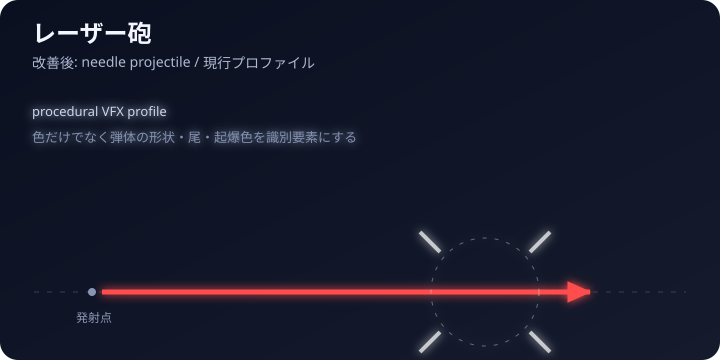
採用音声 after3
高速・低消費。近距離の連続射撃向け。
発射音 / 1.05秒 / stereo 44.1kHz- ダメージ
- 5
- 弾速
- 1600
- エネルギー
- 3
- 再発射
- 0.20s
- 射程
- 近距離
- 盾倍率
- 0.90
主砲6種・ミサイル6種の役割、戦闘パラメータ、採用グラフィック、採用音声をまとめたドキュメントです。

高速・低消費。近距離の連続射撃向け。
発射音 / 1.05秒 / stereo 44.1kHz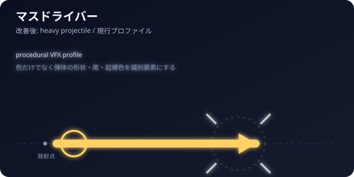
重弾と強い反動。装甲目標を一発ずつ削る。
発射音 / 1.25秒 / stereo 44.1kHz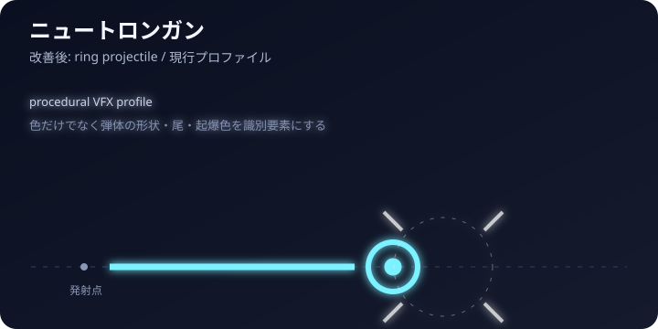
遅く太い弾。シールドを優先して崩す。
発射音 / 1.25秒 / stereo 44.1kHz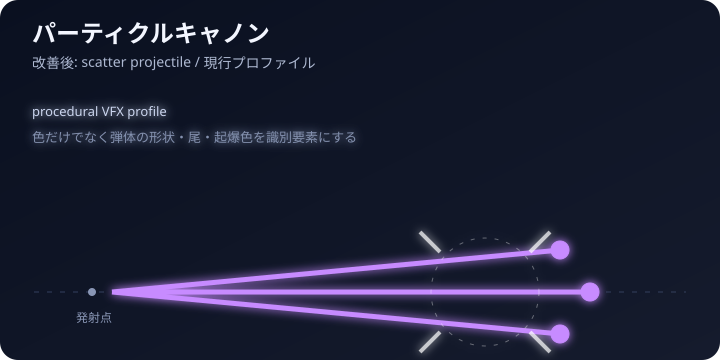
高速連射と粒子の散開。回避中の追撃に強い。
発射音 / 1.25秒 / stereo 44.1kHz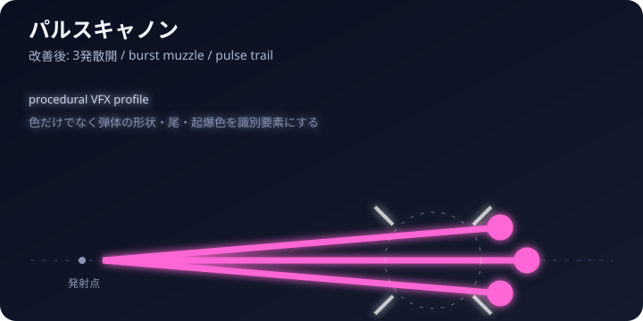
1回の射撃で3発を散開発射。近〜中距離で回避先を塞ぐ。
発射音 / 1.25秒 / stereo 44.1kHz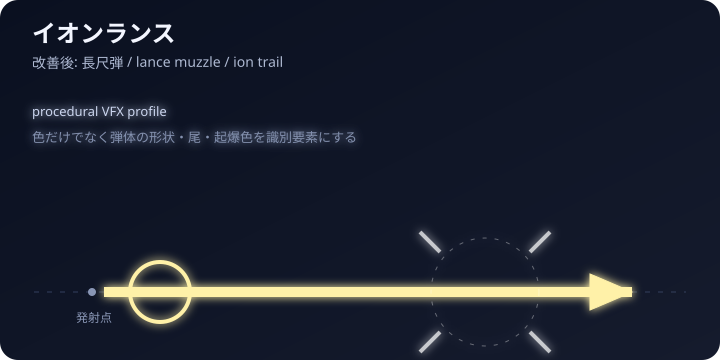
高速・高消費の精密弾。遠距離の装甲を狙い撃つ。
発射音 / 1.25秒 / stereo 44.1kHz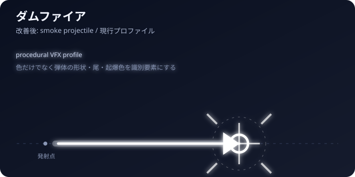
即時発射・無誘導。読み合いで近距離を取る。
発射音 / 1.70秒 / stereo 44.1kHz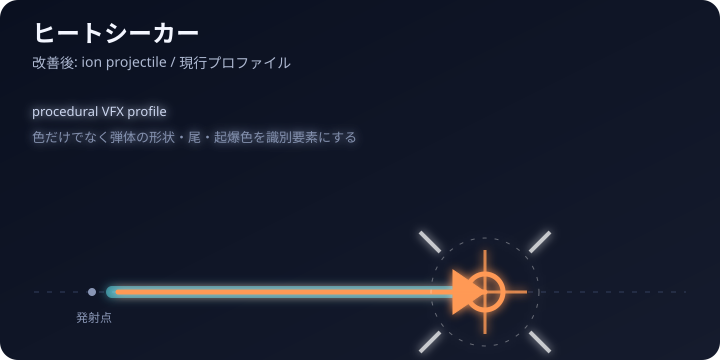
熱源を追尾。フレアに弱いが短いロックで撃てる。
発射音 / 1.80秒 / stereo 44.1kHz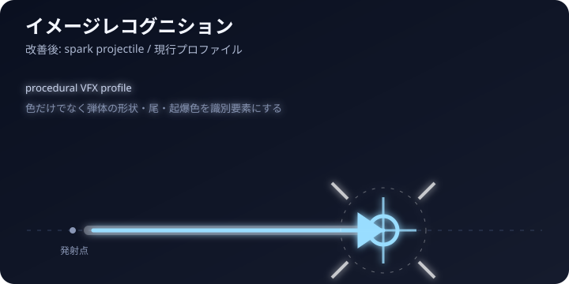
長めのロックと強い誘導。フレア耐性が高い。
発射音 / 1.80秒 / stereo 44.1kHz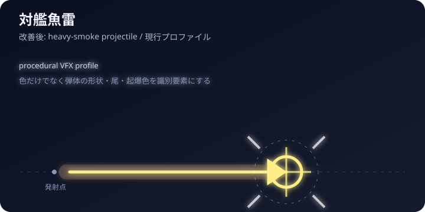
大型目標用。長いロックと低速を補う大爆発。
発射音 / 2.50秒 / stereo 44.1kHz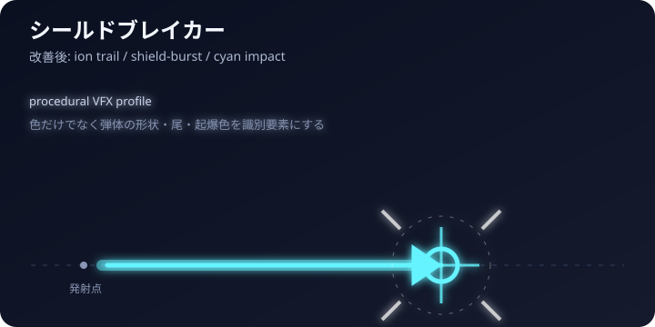
シールドに大きな倍率。短めのロックで防御線を崩す。
発射音 / 1.25秒 / stereo 44.1kHz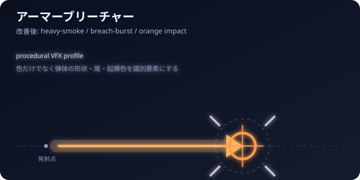
小さな爆風で装甲を集中破壊。確実なロックが必要。
発射音 / 1.90秒 / stereo 44.1kHz